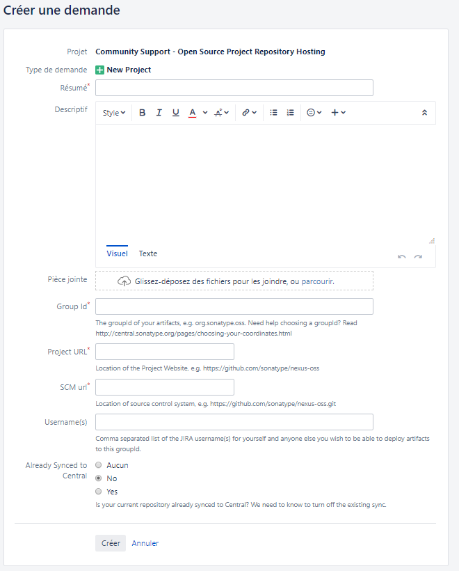

Publication d'un projet sur Maven Central
10/06/2019 - Julien
Introduction
Lors de la création d'un projet open source il est important de mettre à disposition l'archive (artefact) à disposition des futurs développeurs. Dans la communauté Java, il existe un acteur incontournable des archives : Maven Central qui répertorie tous les projets java et les met à disposition des développeurs du monde entier grâce à son gestionnaire de dépendance maven. Dans ce billet, nous allons vous décrire les différentes étapes nécessaires pour publier votre projet sur Maven Central et pour mettre en lignes vos prochaines releases rapidement. Voici les principales étapes à suivre :
- Créer le repository sur github
- Créer un ticket Jira sur Sonatype
- Générer une paire de clés de type OpenPGP
- Configurer le projet
- Publier le projet dans le repo Sonatype / Nexus
Création du repository sur Github
Avant d'éffectuer cette opération, il est nécessaire de créer un compte sur github. Vous pouvez définir le nom que vous souhaitez si tant est qu'il n'est pas déjà utilisé. Une fois le compte créé, cliquer sur le bouton New dans l'onglet Repositories de la page principale du compte pour créer le repository. Remplir les informations nécessaires :
- Repository name: le nom de votre projet
- Public or Private: Sélectionner l'option Public afin que les utilisateur de github puissent voir votre projet
- Add .gitignore: Permet d'exclure des fichiers de github
- Add a Licence: Sélectionner votre type de licence après avoir visité https://choosealicense.com/
Pour plus de détails sur la création d'un compte, du repository vous pouvez consulter les pages d'aide de github :
- Création du compte : https://help.github.com/en/articles/signing-up-for-a-new-github-account
- Création du repo : https://help.github.com/en/articles/create-a-repo
- Publication d'un projet existant : https://help.github.com/en/articles/adding-an-existing-project-to-github-using-the-command-line
Création d'un ticket Jira sur Sonatype
Création d'un compte Sonatype
Pour publier l'artefact sur maven Central, il est nécessaire de créer un compte dans leur Jira à l'adresse suivante : https://issues.sonatype.org/secure/Signup!default.jspa. Attention, il est important de conserver le login / mot de passe car ils seront utilisés par la suite. Une fois le compte créé, vous pouvez vous rendre dans l'application sonatype pour visualiser les projets publiés en utilisant le login et le mot de passe précédents : https://oss.sonatype.org
Création d'un ticket pour demander la création du repo chez Maven Central
La création du repo se fait manuellement par les administrateur de Nexus. Toute demande de création doit se faire à l'aide d'une demande Jira de type "New Project".
Voici le lien qui vous conduira jusqu'au formulaire : https://issues.sonatype.org/secure/CreateIssue.jspa?issuetype=21&pid=10134
Saisir les informations concernant votre projet :
- groupId : com.example
- project url : https://github.com/{nom-utilisateur}/{projet}
- SCM url : https://github.com/{nom-utilisateur}/{projet}.git
Génération d'une paire de clés OpenPGP
Avant de publier l'artefact dans Maven Central, il est nécessaire de signer l'archive générée à l’aide du OpenPGP qui est un standard d'encryptage initialement prévu pour crypter des e-mail. Ce cryptage consiste à créer une paire de clés public / privé, la clé publique sera alors publiée sur un serveur pour vérifier les échanges entre vous et le serveur Maven Central.
La création de cette paire de clés se fait à l'aide d'un outil comme gpg qui est disponible pour différents OS dont Windows à l'adresse suivante : https://gpg4win.org/thanks-for-download.html
Une fois gpg installé, on est en mesure de générer la paire de clés avec la commande suivante :
gpg --full-gen-key--------------------------------------------------------
sec rsa2048 2019-01-05 [SC]
A75F5D09D2A161560F7E9BF0303C29BF7EB536D4 <- La clé est ici
uid [ ultime ] {nom-utilisateur} <{email-utilisateur}>
ssb rsa2048 2019-01-05 [E]gpg --send-key A75F5D09D2A161760FEE8BF0303C29BF7EB536D4Configuration du projet
Avant de publier le projet dans Maven Central, il est nécessaire de modifier la configuration de celui-ci via le fichier pom.xml pour construire le projet, générer les archives sources, la javadoc et lancer la signature de l'artefact
Identification du projet
Modifier le fichier pom.xml à l'aide des directives suivantes pour que Maven Central puisse identifier votre projet et le développeur :
<organization>
<name>{org-name}</name>
<url>https://github.com/{nom-utilisateur}</url>
</organization>
<developers>
<developer>
<name>{nom-utilisateur}</name>
</developer>
</developers>
Gestionnaire d'issues
Modifier le fichier pom.xml à l'aide des directives suivantes pour indiquer où se trouve votre gestionnaire de bugs :
<issueManagement>
<system>GitHub</system>
<url>https://github.com/{nom-utilisateur}/{project}/issues</url>
</issueManagement>Gestionnaire de sources
Modifier le fichier pom.xml à l'aide des directives suivantes pour indiquer l'url du gestionnaire de source, à savoir git :
<scm>
<url>https://github.com/{nom-utilisateur}/{projet}</url>
<connection>scm:git:git://github.com/{nom-utilisateur}/{projet}.git</connection>
<developerConnection>scm:git:ssh://git@github.com:{nom-utilisateur}/{projet}.git</developerConnection>
<tag>HEAD</tag>
</scm>Type de licence
Modifier le fichier pom.xml à l'aide des directives suivantes pour indiquer le type de licence de votre projet. Il est important de définir dans chacun de vos fichiers la déclaration de licence en adéquation avec celle indiquée dans votre repository, de plus votre projet doit contenir un fichier LICENSE contenant le détail de celle-ci.
<licenses>
<license>
<name>Apache License 2.0</name>
<url>https://github.com/{nom-utilisateur}/{project}/blob/master/LICENSE.txt</url>
<distribution>repo</distribution>
</license>
</licenses>Deploiement dans Maven Central
Modifier le fichier pom.xml à l'aide des directives suivantes pour indiquer les urls de publication de votre projet sur le serveur Maven Central :
<distributionManagement>
<snapshotRepository>
<id>ossrh</id>
<url>https://oss.sonatype.org/content/repositories/snapshots</url>
</snapshotRepository>
<repository>
<id>ossrh</id>
<url>https://oss.sonatype.org/service/local/staging/deploy/maven2/
</url>
</repository>
</distributionManagement>Ajout des plugins
Modifier le fichier pom.xml à l'aide des directives suivantes pour inclure les différents plugins pour préparer et construire votre projet :
<plugin>
<artifactId>maven-deploy-plugin</artifactId>
<version>2.8.2</version>
<executions>
<execution>
<id>default-deploy</id>
<phase>deploy</phase>
<goals>
<goal>deploy</goal>
</goals>
</execution>
</executions>
</plugin>
<plugin>
<groupId>org.apache.maven.plugins</groupId>
<artifactId>maven-release-plugin</artifactId>
<version>2.5.3</version>
<configuration>
<localCheckout>true</localCheckout>
<pushChanges>false</pushChanges>
<mavenExecutorId>forked-path</mavenExecutorId>
<arguments>-Dgpg.passphrase=${gpg.passphrase}</arguments>
</configuration>
<dependencies>
<dependency>
<groupId>org.apache.maven.scm</groupId>
<artifactId>maven-scm-provider-gitexe</artifactId>
<version>1.9.5</version>
</dependency>
</dependencies>
</plugin>
<plugin>
<groupId>org.sonatype.plugins</groupId>
<artifactId>nexus-staging-maven-plugin</artifactId>
<version>1.6.7</version>
<extensions>true</extensions>
<configuration>
<serverId>ossrh</serverId>
<nexusUrl>https://oss.sonatype.org/</nexusUrl>
<autoReleaseAfterClose>true</autoReleaseAfterClose>
</configuration>
</plugin>
<plugin>
<groupId>org.apache.maven.plugins</groupId>
<artifactId>maven-source-plugin</artifactId>
<version>3.0.1</version>
<executions>
<execution>
<id>attach-sources</id>
<goals>
<goal>jar</goal>
</goals>
</execution>
<execution>
<id>attach-javadoc</id>
<goals />
</execution>
</executions>
</plugin>
Ajout d'un profil pour signer l'artefact
Modifier le fichier pom.xml à l'aide des directives suivantes pour indiquer à maven de signer l'archive avant de la publier :
<profile>
<id>release-sign-artifacts</id>
<activation>
<property>
<name>performRelease</name>
<value>true</value>
</property>
</activation>
<build>
<plugins>
<plugin>
<groupId>org.apache.maven.plugins</groupId>
<artifactId>maven-gpg-plugin</artifactId>
<version>1.6</version>
<executions>
<execution>
<id>sign-artifacts</id>
<phase>verify</phase>
<goals>
<goal>sign</goal>
</goals>
</execution>
</executions>
</plugin>
</plugins>
</build>
</profile>Définition des informations d'authentification
Modification du fichier settings.xml Afin de masquer certaines informations nécessaires dans le fichier pom.xml, nous allons créer / modifier le fichier settings.xml dans le répertoire {user}/.m2 pour ajouter les options suivantes :
<settings xmlns="http://maven.apache.org/SETTINGS/1.0.0"
xmlns:xsi="http://www.w3.org/2001/XMLSchema-instance"
xsi:schemaLocation="http://maven.apache.org/SETTINGS/1.0.0
https://maven.apache.org/xsd/settings-1.0.0.xsd">
<localRepository/>
<interactiveMode/>
<offline/>
<pluginGroups/>
<servers>
<server>
<id>ossrh</id>
<username{sonatype-user}/username>
<password{sonatype-password}/password>
</server>
</servers>
<mirrors/>
<proxies/>
<profiles>
<profile>
<id>ossrh</id>
<activation>
<activeByDefault>true</activeByDefault>
</activation>
<properties>
<gpg.passphrase>{THEPASSPHRASE}</gpg.passphrase>
</properties>
</profile>
</profiles>
<activeProfiles/>
</settings>- username : L'utilisateur créé dans le Jira sonatype
- password : Le mot de passe de l'utilisateur
- gpg.passphrase : La phrase utilisée pour générer la clé
Publication
Il est maintenant possible de lancer le déploiement du projet dans maven central avec les commandes suivantes :
mvn release:clean
mvn release:prepare
mvn release:perform